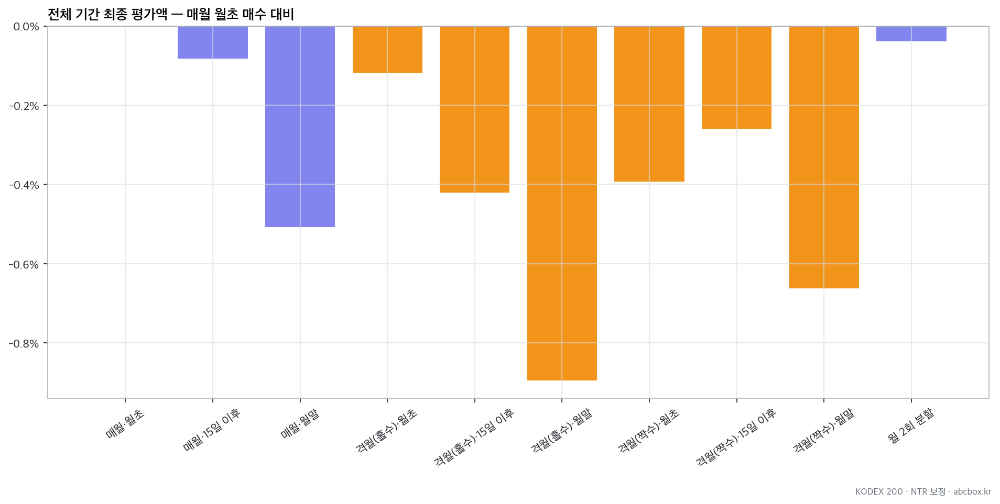
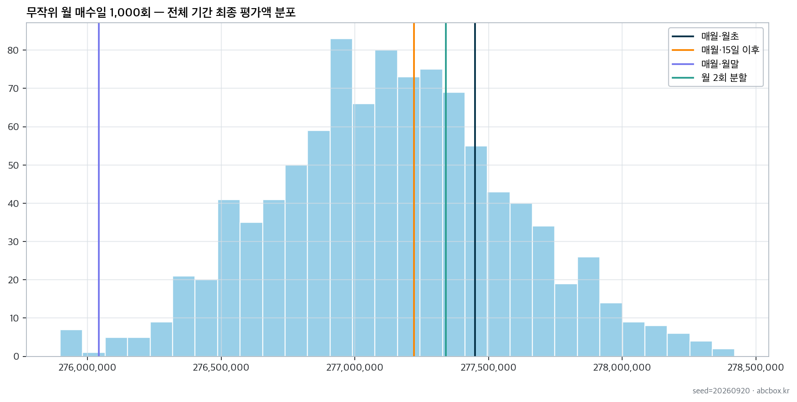
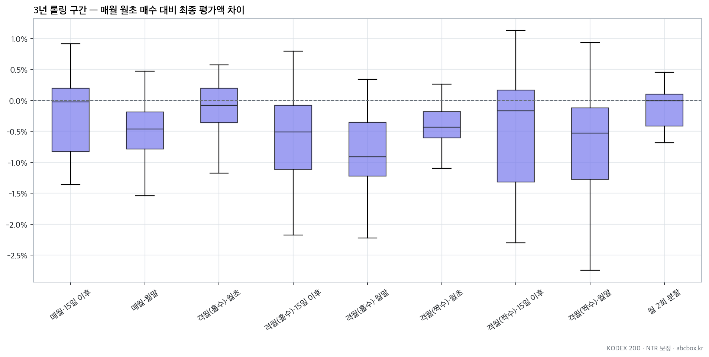

지난 글에서 일시 거치와 적립식 투자(DCA)를 비교했는데 적립식으로 갈 경우 궁금증이 생겼다.
매달 초에 한 번 사는 걸로 비교했는데 다르게 사면 어떻게 될까?
예를 들어 월 중순, 월말에 산다면? 또 두 달에 한 번 200만원씩 사서 거래 횟수를 줄인다면? 반대로 한 달 투자금을 두 번으로 나눠 산다면? 이런 궁금증을 해결하기 위해 지난번과 마찬가지로 KODEX 200의 과거 데이터로 백테스트를 수행해 봤다.
비교 조건
지난번과 달리 아래와 같이 다양한 매수 시점을 비교 조건으로 정했다. 월급을 실제 받는 시점은 다 다르겠지만 어느 때든 살 수 있는 걸로 가정한다.
- 매월 월초: 매월 첫 거래일에 100만원 매수
- 매월 중순: 매월 15일 이후 첫 거래일에 100만원 매수
- 매월 월말: 매월 마지막 거래일에 100만원 매수
- 격월 매수: 홀수월 또는 짝수월에 200만원 매수. 각각 월초, 중순, 월말 비교
- 월 2회 분할: 월초와 15일 이후 첫 거래일에 50만원씩 매수
- 무작위 매수: 매월 거래일 하나를 무작위로 골라 매수하는 실험을 1,000회 반복
격월 매수에서는 매수하지 않는 달의 100만원을 현금으로 보관했다가 다음 매수월에 합치는 걸로 한다. 대기 현금에는 이자가 붙지 않는 것으로 계산했다.
백테스트 전제와 조건
- 대상: KODEX 200(069500)
- 전체 기간: 2013년 1월 ~ 2025년 6월, 총 150개월
- 월 납입액: 100만원, 총 납입액 1억 5,000만원
- 체결가: 매수일의 고가와 저가의 중간값
- 매수 단위: ETF 1주, 남은 현금은 다음 매수로 이월
- 거래비용: 매수 금액의 0.015%
- 대기 현금 이자: 없음
- 분배금: 코스피200 NTR과 가격지수의 차이로 세후 재투자 효과를 가격에 반영
- 무작위 실험: 각 기간에 대해 1,000회 반복
- 견고성 확인: 시작 월을 한 달씩 옮겨가며 3년 구간 115개를 추가 비교
이 실험은 과거 데이터에서 유리한 조건을 골라낸 것 아니라 달력의 날짜만 정해서 실험하고 비교한 것이다.
상승장에서는 월초 매수가 가장 좋았다
2013년 1월부터 2025년 6월까지의 결과를 먼저 보자. 2025년 하반기부터 시작된 급등이 특정 전략에 유리하게 작용하지 않도록 그 직전에서 기간을 끝냈다. 아래 그래프는 모든 전략의 최종 평가액을 매월 월초 매수와 비교한 것이다.

월초 매수가 2억 7,745만원으로 가장 높았다. 월 2회 분할은 0.04%, 중순 매수는 0.08% 낮아 차이가 매우 작았다. 월말 매수는 월초보다 0.51% 낮았다.
| 전략 | 최종 평가액(잔여 현금 포함) | 월초 대비 | MDD | 매수 회차 |
|---|---|---|---|---|
| 매월 월초 | ₩277,449,518 | 0.00% | -35.6% | 150 |
| 월 2회 분할 | ₩277,340,093 | -0.04% | -35.5% | 300 |
| 매월 15일 이후 | ₩277,220,792 | -0.08% | -35.4% | 150 |
| 격월(홀수) 월초 | ₩277,121,574 | -0.12% | -35.4% | 75 |
| 격월(짝수) 15일 이후 | ₩276,730,695 | -0.26% | -35.2% | 75 |
| 격월(짝수) 월초 | ₩276,361,356 | -0.39% | -35.4% | 75 |
| 격월(홀수) 15일 이후 | ₩276,284,441 | -0.42% | -35.4% | 75 |
| 매월 월말 | ₩276,041,993 | -0.51% | -35.2% | 150 |
| 격월(짝수) 월말 | ₩275,611,902 | -0.66% | -35.1% | 75 |
| 격월(홀수) 월말 | ₩274,966,794 | -0.89% | -35.0% | 75 |
월초 투자가 유리한 결과가 여러 곳에 나타나는데 절대적인 차이로 보이지는 않는다. 전체 기간은 넓게 봐서 상승장이었고 아마도 조금이라도 일찍 투자금이 들어가서 나타난 효과가 아닐까 싶다. 다시 말해 대체적으로 상승장이었다면 조금이라도 일찍 투자하는 게 더 유리했고 월말이나 두 달에 한 번 매수할 경우 월초보다 상승한 뒤 매수하는 경우가 많아서일 것 같다.
그런 관점에서 월 2회 분할 역시 상승장에 일찍 참여하는 효과가 떨어지기 때문에 월초 1회 매수보다 수익이 떨어지는 것으로 보인다. 수수료는 매수 금액에만 비례하게 했으므로 거래 횟수에 따른 페널티는 없는 것으로 계산했지만 거래 횟수가 늘어나면 그만큼 원하는 가격(호가)과 체결 가격에 차이가 나서 손실이 날 수 있으므로 주의해야 한다.
MDD(고점 대비 최대 하락률)는 모든 전략이 약 -35%로 비슷했다. 150개월을 동일한 ETF로 적립하고 총액이 커지니 분산 매수 효과가 작아지므로 위험이 점점 비슷해진 걸로 판단된다.
무작위 날짜로 매수했을 때와 비교해보자
150개월 기간을 통짜로 한 번에 비교했을 때만 우연히 월초가 유리한 가격이 많이 나타났을 수 있으니 이번엔 매월 거래일 하나를 무작위로 골라 1,000회 반복 실험하고 그 분포를 차트로 나타내 봤다.

매달 기분 내키는 날짜에 투자했을 경우 최대 2억 7,840만원, 최소 2억 7,590 정도가 될 수 있으며 중앙값은 2억 7,714이 된다는 뜻이다. 무작위기 때문에 실험 때마다 다른 결과가 나올 것이므로 이걸 절대적인 결과로 보면 안 된다.
다만 이런 범위에 대해 앞서의 각 실험을 대조해보면 아래와 같다.
- 매월 월초, 월 2회, 매월 중순 매수는 무작위 결과의 중앙값보다 좀 더 결과가 좋긴 한데 차이가 크지 않다.
- 매월 월말 매수는 유독 하위권이다.
장기간 우상향한 시장에서는 하루라도 빨리 산 쪽이 유리하다는 예상과 잘 맞는 결과로 보인다.
그럼 기간을 잘라 실험하면 어떨까
전체 기간 하나만으로 실험을 끝낼 수는 없다. 이번엔 3년(36개월)짜리 적립식 투자를 하는 것으로 가정하고 시작 월을 한 달씩 옮겨가며 115개 구간을 비교했다. 즉 2013년 1월부터 3년, 2013년 2월부터 다시 3년을 정하는 식으로 3년짜리 구간을 115개 정해 실험했다는 뜻이다.
아래 상자 그림은 각 전략의 최종 평가액이 같은 구간의 월초 매수보다 얼마나 높거나 낮았는지를 보여준다.

월 2회 분할은 월초보다 중앙값이 0.01% 낮아 사실상 차이가 없었고 115개 중 46.1%의 구간에서는 월초를 이겼다. 중순 매수도 47.8%의 구간에서 월초보다 좋았다. 월말 매수는 월초보다 중앙값이 0.46% 낮았지만 15.7%의 구간에서는 월초를 이겼다. 아래는 결과 중 대표 전략 5개만 표시한 것이다.
| 전략 | 월초 대비 승률 | 중앙값 차이 | 10~90% 범위 |
|---|---|---|---|
| 월 2회 분할 | 46.1% | -0.01% | -0.58% ~ +0.24% |
| 매월 15일 이후 | 47.8% | -0.03% | -1.15% ~ +0.47% |
| 매월 월말 | 15.7% | -0.46% | -1.06% ~ +0.25% |
| 격월(홀수) 월초 | 47.0% | -0.08% | -0.64% ~ +0.32% |
| 격월(짝수) 월초 | 5.2% | -0.43% | -0.77% ~ -0.08% |
115개 구간으로 나눠서 실험했지만 각각이 완전히 독립적인 구간이 아니고 겹치는 구간이 있다는 데 주의해야 한다. 예를 들어 시작 월이 한 달밖에 차이가 나지 않는 두 구간은 35개월이 겹치니 거의 비슷한 결과일 것이다. 구간별 결과가 100% 독립적이지는 않으므로 이 결과는 절대적인 경향이 아니라고 생각해야 한다.
마지막 급등 구간이 월초 효과를 키운다
25년 하반기부터의 코스피 급등을 실험에 포함시키면 어떻게 될까? 마지막 1년의 가격 상승이 전체 결과에 큰 영향을 주지 않았을까? 종료일을 26년 6월까지로 바꿔 비교하니 월초 매수의 우위가 조금 더 보인다.
| 지표 | 2025년 6월까지 | 2026년 6월까지 |
|---|---|---|
| 월초 대비 월 2회 분할 차이 | -0.04% | -0.11% |
| 월초 대비 중순 매수 차이 | -0.08% | -0.22% |
| 월초 대비 월말 매수 차이 | -0.51% | -0.74% |
| 3년 구간 중 중순 매수 승률 | 47.8% | 43.3% |
| 3년 구간 중 분할 매수 승률 | 46.1% | 41.7% |
역시나 월초 매수가 상승 기간 동안 다른 조건보다 항상 먼저 매수하므로 좀 더 유리한 것으로 보인다. 월초라는 날짜 자체의 효과보다 종료 시점의 시장 상황이 결과에 더 크게 작용한 것이다.
확인하기 위해 별도로 하락장 구간을 정해 실험해 봤는데 결과가 반대로 된다. 즉, 하락장에서는 늦게 사는 게 유리하므로 월말 매수가 월초 매수보다 약간 유리했다. 하락장에서는 월초에 사면 월말에 사는 것보다 하락 구간이 길기 때문이다.
아래는 2018년 1월부터 2020년 3월까지 27개월 동안 총 2,700만원을 납입한 결과다.
| 전략 | 최종 평가액(잔여 현금 포함) | 누적 수익률 | MDD |
|---|---|---|---|
| 격월(짝수) 월말 | ₩23,811,702 | -11.8% | -33.3% |
| 격월(홀수) 월말 | ₩23,804,619 | -11.8% | -32.4% |
| 격월(홀수) 15일 이후 | ₩23,762,321 | -12.0% | -33.7% |
| 격월(짝수) 15일 이후 | ₩23,724,521 | -12.1% | -33.9% |
| 매월 월말 | ₩23,696,083 | -12.2% | -33.4% |
| 격월(홀수) 월초 | ₩23,665,482 | -12.4% | -34.5% |
| 매월 15일 이후 | ₩23,639,228 | -12.4% | -34.4% |
| 월 2회 분할 | ₩23,571,585 | -12.7% | -34.7% |
| 격월(짝수) 월초 | ₩23,536,834 | -12.8% | -35.0% |
| 매월 월초 | ₩23,496,156 | -13.0% | -35.5% |
격월 짝수월 전략은 마지막 달인 2020년 3월에 매수하지 않아 약 100만원이 현금으로 남았다는 점을 감안해야 한다(하락 영향을 받지 않음). 매월 매수 전략끼리 비교해도 월말 매수의 평가액이 월초 매수보다 약 20만원 높았고 MDD도 2.1%포인트 낮았다.
결국 중요한 건 꾸준한 매수다
실험 결과에서 봤듯이 매수일의 결과 차이가 크지 않았고 있더라도 전체적인 시장의 상승, 하락 방향과 실험 기간 막판의 시장 방향 영향이 커 보였다. 상승, 하락을 미리 알 수 없기 때문에 우리는 위험을 줄이고자 적립식 투자를 하는 것이고 그렇다면 날짜에 연연해서는 좋은 투자가 되지 않을 것 같다.
중요한 건 꾸준한 매수다. 월급이 들어온 뒤 감당할 수 있는 금액을 빼먹지 않고 꾸준히 투자하는 규칙이 더 중요해 보인다. 최고의 매수 타이밍은 역시 월급날이 아닐까.
댓글
댓글을 불러오는 중입니다.